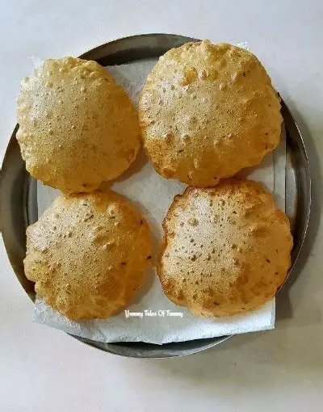

Poori and Chicken Curry Recipe
Steps to Cook Poori
Step 1
Mix wheat flour, salt, and water to make a soft dough for poori.
Step 2
Divide the dough into small balls and roll them into small circles.
Step 3
Heat oil in a pan and deep fry each poori until golden brown.

step to cook chicken curry
Step 1
Clean and cut the chicken into pieces.
Step 2
Heat oil in another pan and sauté onions, tomatoes, and spices.
Step 3
Add the chicken pieces and cook for a few minutes.
Step 4
Pour water or coconut milk and let it simmer until the chicken is cooked.
Step 5
Serve the hot poori with spicy chicken curry.